Portraits, still life, and moving image — shot as they came, not sorted into a series. The camera as a second sketchbook: quick studies in light, color, and a person's presence in a frame.
Two short films below, then a wall of stills beneath them. Click through in whatever order you land on.
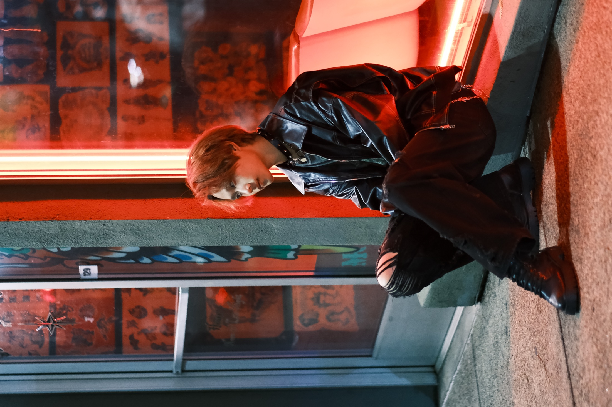
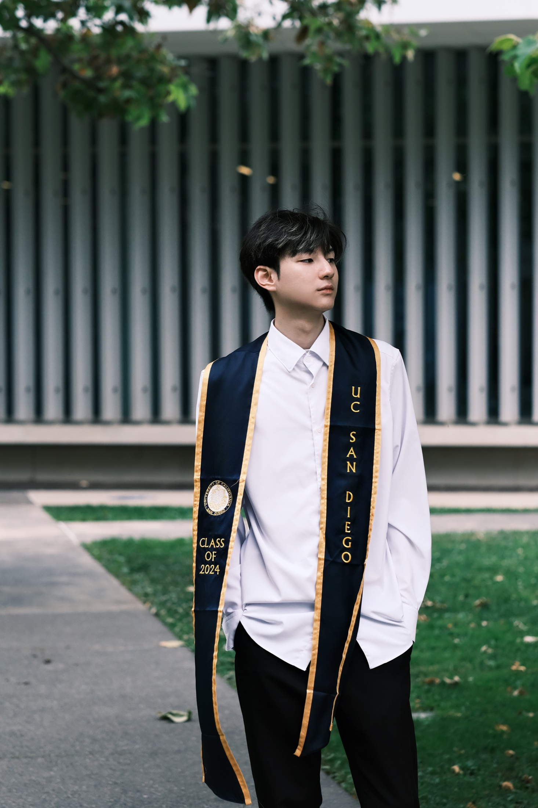
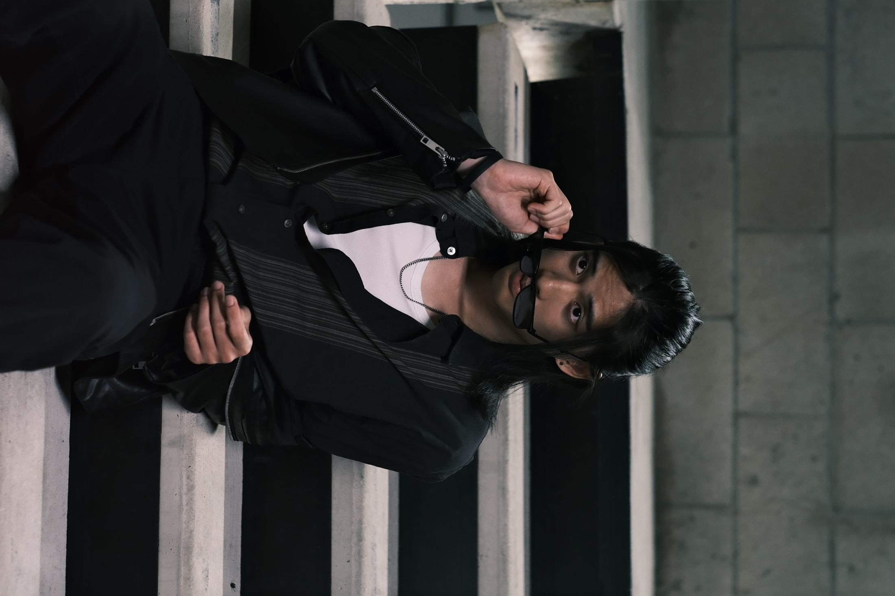
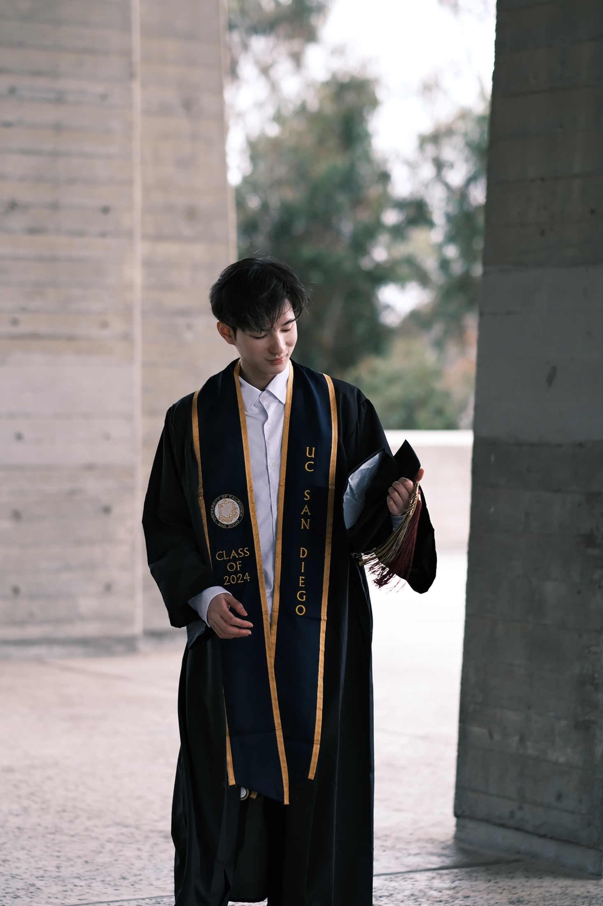
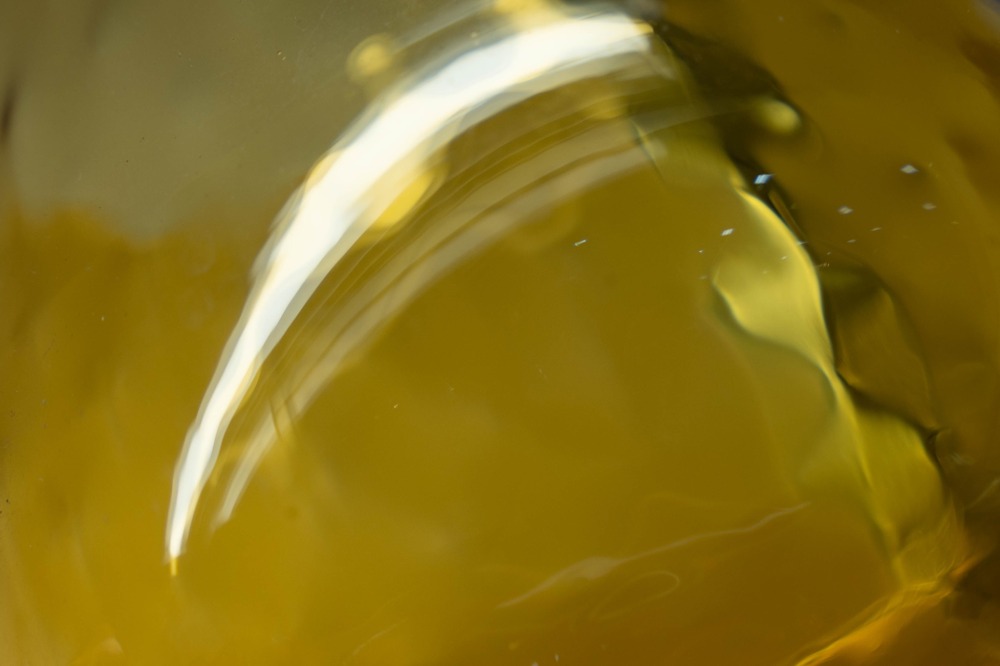
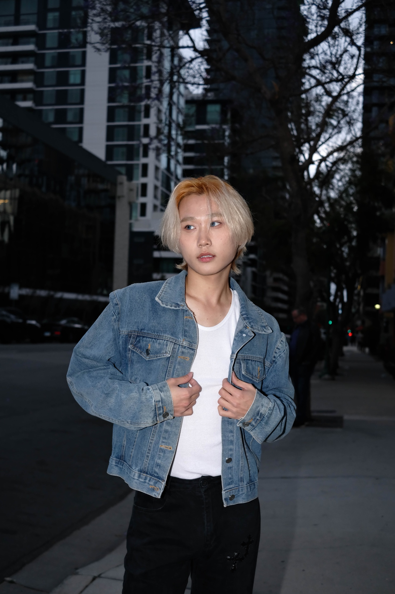
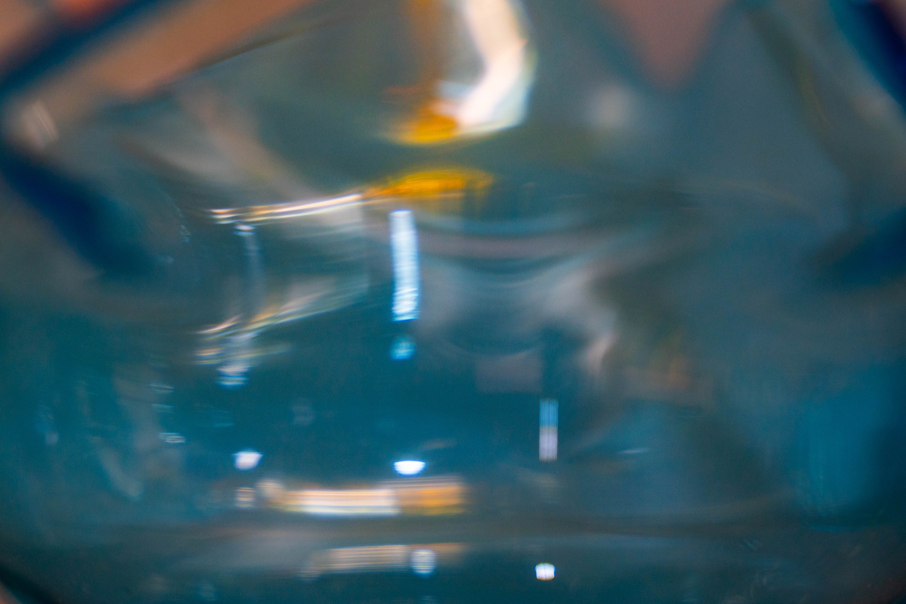
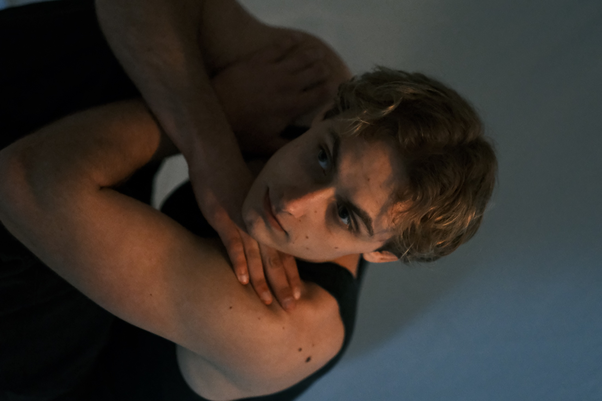
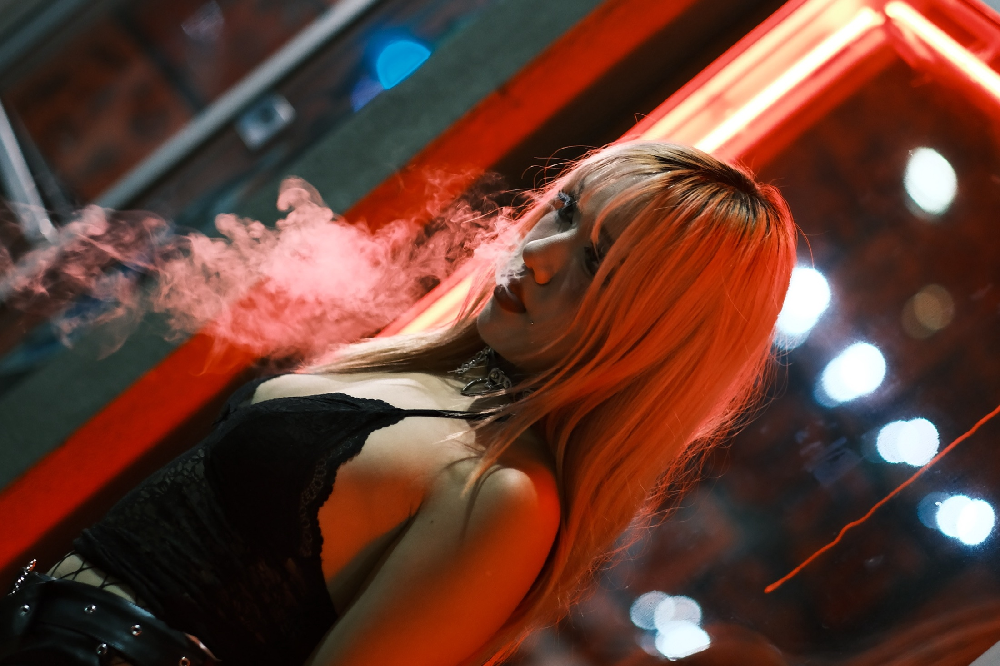
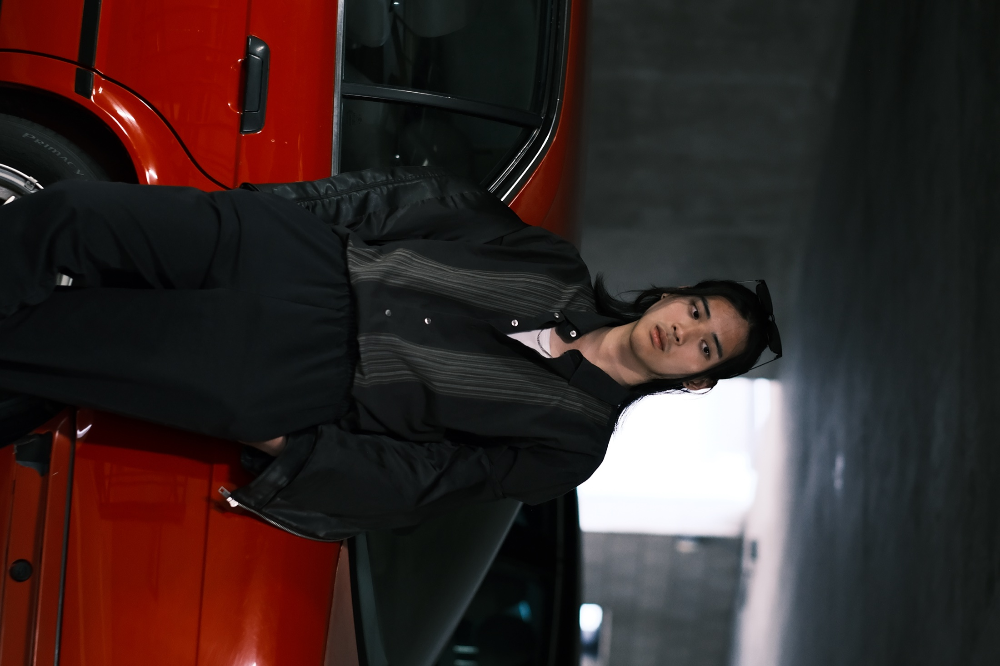
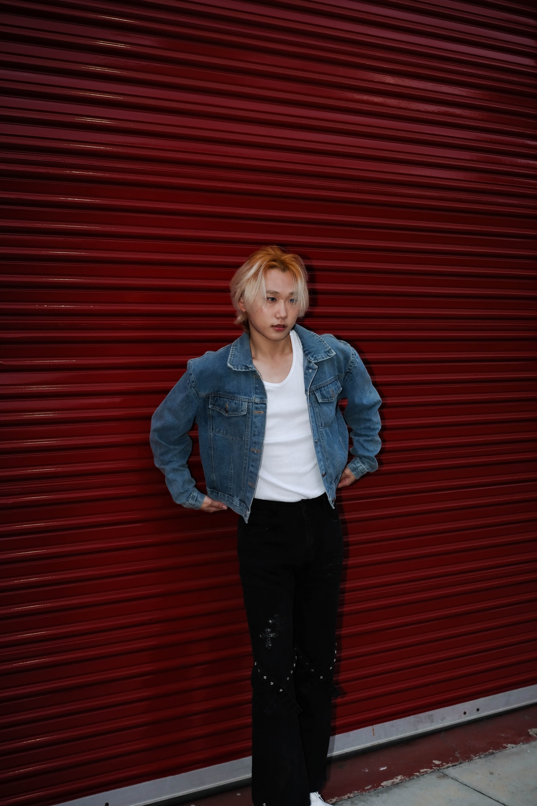
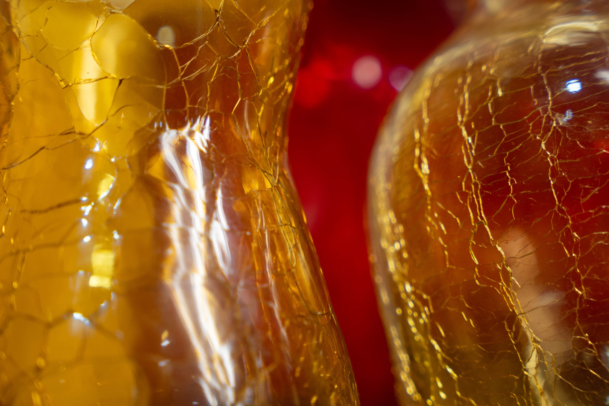